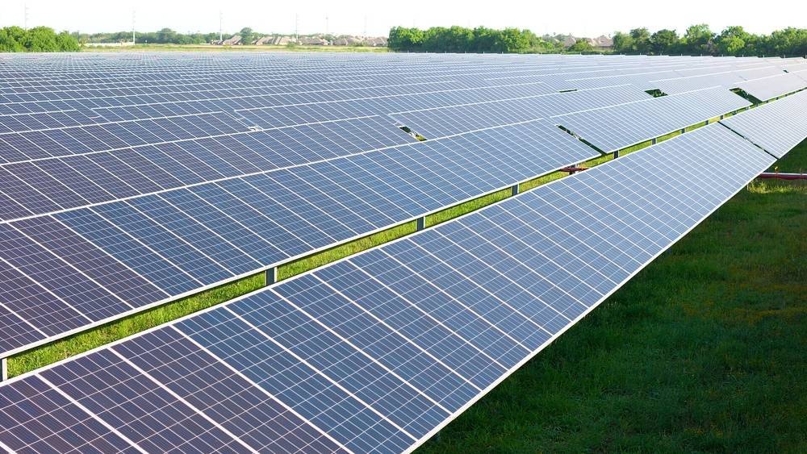

미국 미네소타, 태양광 밑에서 양 2,200마리·채소 20여 종·젖소 키운다…영농형 태양광 초기 성과 잇따라

공동체 태양광 정원 패널 밑에서 소작농 3명이 농사, 케일은 노지보다 잘 자라…가족농은 자비 7만5,000달러로 높이 14피트 구조물, 7만5,000에이커 미만이면 대기 중인 태양광 모두 수용
미국 미네소타주에서 태양광 패널 아래에서 농사와 목축을 함께 하는 영농형 태양광 사업들이 초기 성과를 내고 있다. 주 최대 태양광 단지인 베커 인근 셔코 단지에서는 약 1,900ha에 깔린 패널 170만 장 사이에서 양 2,200마리 남짓이 풀을 뜯고, 빅레이크 인근 공동체 태양광 정원 '빅리버 팜스'에서는 2023년부터 태양광 개발사와 신규 농민 지원 비영리단체가 함께 운영하는 울타리 안 패널 밑에서 소작농 3명이 식용작물과 꽃 20여 종을 기른다. 미네소타대 연구진의 2년 조사 최종 결과는 내년 봄에 나오지만, 케일 같은 잎채소가 노지보다 패널 근처에서 더 잘 자란다는 점은 이미 확인됐고, 모리스의 대학 연구센터에서는 패널 그늘에서 풀을 뜯는 젖소의 체온이 한낮에 화씨 0.5도가량 낮았다. 옥수수·콩 농사는 높은 키와 넓은 농기계가 걸림돌이어서, 올리비아의 한 가족농은 자비 약 7만5,000달러를 들여 높이 14피트(약 4.3m) 구조물 10개를 세웠지만 아직 상업 규모와는 거리가 멀다. 지역 비영리단체 클린그리드얼라이언스는 미네소타 계통 연결을 기다리는 태양광을 모두 짓는 데 농지 7만5,000에이커(약 3만ha) 미만이면 충분하다고 추산했다.
시민에너지 관점
미네소타의 사례는 태양광이 농지를 빼앗는다는 걱정에 실험 결과로 답하고 있다. 일본이 2013년부터 영농형 태양광을 허용해 농사와 전기 판매를 함께 하는 농가를 늘려 온 것처럼, 패널 밑 농사가 수확을 지키면서 농가에 두 번째 수입을 준다는 근거가 쌓이고 있다. 특히 빅리버 팜스처럼 공동체 태양광과 신규 농민 지원 단체가 손잡으면 땅 없는 농민도 농사를 지을 수 있다. 우리도 영농형 태양광 제도를 만들 때 외부 사업자가 아닌 농민과 마을 협동조합이 발전소의 주인이 되도록 지분과 수익 구조를 먼저 정해야 한다.
출처: MinnPost 2026-11-09 Brian Martucci 원문 보기
米ミネソタ州、太陽光パネルの下で羊2,200頭・野菜20種余り・乳牛を育てる…営農型太陽光で初期成果が相次ぐ
コミュニティ太陽光ガーデンのパネル下で小作農3人が栽培、ケールは露地より生育良好…家族農家は自費7万5,000ドルで高さ14フィートの架台、7万5,000エーカー未満で接続待ちの太陽光をすべて収容
米ミネソタ州で、太陽光パネルの下で農業や畜産を同時に行う営農型太陽光事業が初期の成果を上げている。州最大の太陽光発電所であるベッカー近郊のシャーコ発電所では、約1,900haに並ぶパネル170万枚の間で羊2,200頭余りが草を食み、ビッグレイク近郊のコミュニティ太陽光ガーデン「ビッグリバー・ファームズ」では、2023年から太陽光開発会社と新規就農者を支援する非営利団体が共同で運営する柵の中のパネルの下で、小作農3人が食用作物や花を20種余り育てている。ミネソタ大学研究チームによる2年間の調査の最終結果は来春に出るが、ケールなどの葉物野菜が露地よりパネルの近くでよく育つことはすでに確認されており、モリスの大学研究センターでは、パネルの日陰で草を食む乳牛の体温が日中に華氏0.5度ほど低かった。トウモロコシや大豆の栽培は背の高さと大型農機が障害で、オリビアのある家族農家は自費約7万5,000ドルをかけて高さ14フィート（約4.3m）の架台10基を建てたが、まだ商業規模には遠い。地元の非営利団体クリーン・グリッド・アライアンスは、ミネソタで系統接続を待つ太陽光をすべて建てても、農地7万5,000エーカー（約3万ha）未満で足りると試算した。
市民エネルギーの視点
ミネソタの事例は、太陽光が農地を奪うという懸念に実験結果で答えている。日本が2013年から営農型太陽光を認め、農業と売電を両立する農家を増やしてきたように、パネルの下の農業が収穫を守りつつ農家に第二の収入をもたらすという根拠が積み上がっている。特にビッグリバー・ファームズのように、コミュニティ太陽光と新規就農者支援団体が手を組めば、土地を持たない農民も農業ができる。韓国も営農型太陽光の制度をつくる際には、外部の事業者ではなく農民と村の協同組合が発電所の所有者になるよう、持ち分と収益の仕組みを先に定めるべきだ。
出典: MinnPost 2026-11-09 Brian Martucci 原文を読む
美国明尼苏达州在太阳能板下养羊2,200只、种菜20多种、放牧奶牛…农光互补初步成果接连显现
社区太阳能园板下3名佃农耕作，羽衣甘蓝长得比露地好…家庭农场自费7.5万美元建14英尺高支架，不到7.5万英亩即可容纳全部待并网太阳能
美国明尼苏达州在太阳能板下同时种植和放牧的农光互补项目正取得初步成果。在该州最大的太阳能电站、贝克附近的舍尔科电站，约1,900公顷土地上铺设的170万块面板之间有2,200多只羊吃草；在大湖镇附近的社区太阳能园"大河农场"，自2023年起由太阳能开发商与扶持新农民的非营利组织共同运营，3名佃农在围栏内的面板下种植20多种粮食作物和花卉。明尼苏达大学研究团队为期两年的调查最终结果将于明年春天公布，但羽衣甘蓝等叶菜在面板附近比露地长得更好已得到确认；莫里斯的大学研究中心发现，在面板阴凉下吃草的奶牛午间体温低约华氏0.5度。玉米和大豆种植则受作物高度和大型农机所限，奥利维亚的一户家庭农场自费约7.5万美元建起10个高14英尺（约4.3米）的支架，但离商业规模仍很远。当地非营利组织清洁电网联盟估算，要建成明尼苏达所有等待并网的太阳能项目，所需农地不到7.5万英亩（约3万公顷）。
市民能源视角
明尼苏达的案例正以实验结果回应"太阳能抢占农地"的担忧。正如日本自2013年起允许农光互补、让兼顾种地与售电的农户不断增加，板下农业在守住收成的同时为农户带来第二份收入的证据正在积累。尤其像大河农场这样，社区太阳能与新农民扶持团体携手，没有土地的农民也能耕作。韩国在设计农光互补制度时，也应先确定股权和收益结构，让农民和村庄合作社而非外部开发商成为电站的主人。
来源: MinnPost 2026-11-09 Brian Martucci 查看原文
Minnesota Raises 2,200 Sheep, 20-Plus Crops and Dairy Cows Under Solar Panels as Agrivoltaics Projects Report Early Results
Three tenant farmers grow under the panels of a community solar garden, where kale does better than in open fields; a farm family spent $75,000 of its own on 14-foot racks, and under 75,000 acres could host every solar project awaiting grid connection
Agrivoltaics projects that combine farming or grazing with solar panels are showing early results in the U.S. state of Minnesota. At the Sherco installation near Becker, the state's largest solar farm, some 2,200 sheep graze among 1.7 million panels spread over about 4,700 acres, while at Big River Farms, a community solar garden near Big Lake run since 2023 by a solar developer and a nonprofit that supports emerging farmers, three tenant farmers grow about 20 food and flower crops under the panels inside the fence. Final results of a two-year University of Minnesota study will come next spring, but it is already clear that leafy greens such as kale grow better near the panels than in open fields, and at a university research centre in Morris, cows grazing in panel shade ran about half a degree Fahrenheit cooler in the afternoon. Corn and soybeans are harder because of crop height and wide machinery: a farm family near Olivia spent about $75,000 of its own money on 10 racks 14 feet high, still far from commercial scale. The Clean Grid Alliance, a regional nonprofit, estimates that less than 75,000 acres of farmland could host every solar project waiting to connect to Minnesota's grid.
Citizen Energy View
Minnesota is answering fears that solar will swallow farmland with field results. Just as Japan has allowed solar sharing since 2013 and seen more farms combine crops with electricity sales, evidence is building that farming under panels protects harvests while giving farmers a second income. When community solar teams up with groups that support new farmers, as at Big River Farms, even farmers without land of their own can grow food. As Korea designs its agrivoltaics rules, it should first settle ownership and revenue structures so that farmers and village cooperatives, not outside developers, own the power plants.
Source: MinnPost 2026-11-09 Brian Martucci Read the original